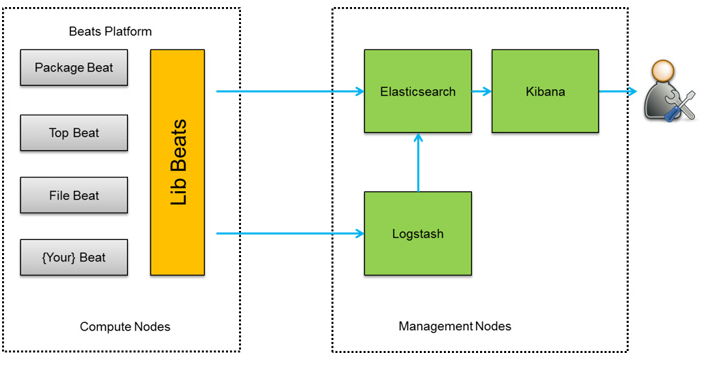
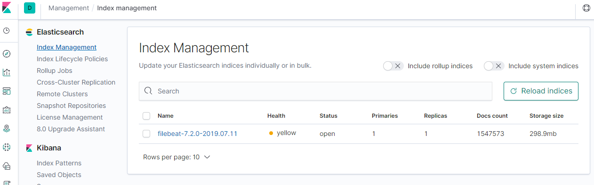

快速搭建ELK（7.2.0）
真正用ELK，才发现ELK的文档那么多，眼花缭乱。
也难怪，每一个单独起来也都是挺好的小工具。
有必要稍微梳理一下。
Elastic Stack
- Beats
- Logstash
- Elasticsearch
- Kibana
Elasticsearch是核心搜索引擎，用于数据缓存、搜索和分析。
Beats是轻量级的数据采集器，有很多种，按需取用。
| Elastic Beats | To capture |
|---|---|
| Auditbeat | Audit data |
| Filebeat | Log files |
| Functionbeat | Cloud data |
| Heartbeat | Availability monitoring |
| Journalbeat | Systemd journals |
| Metricbeat | Metrics |
| Packetbeat | Network traffic |
| Winlogbeat | Windows event logs |
Logstash是数据收集管道，数据通过它进行归集，同时可以对经过的数据进行简单处理，如清洗过滤和润色等。
Kibana是ElasticSearch的可视化平台，提供了数据分析和监控的界面和工具集。
https://www.elastic.co/guide/index.html
ELK架构
比较简单实用的架构应该是下面这种，Beats装在要采集数据的终端，将数据发给Logstash，再转给ElasticSearch。
Beats也可以直接发数据给ElasticSearch，但经Logstash可以先进行一些预处理。它们之间也可以进一步引入消息队列。

ELK安装
先不管那么多，把四个软件都下载安装了再说。这里用的是解压版。 需要注意的是：要安装相同的版本。
- elasticsearch-7.2.0-linux-x86_64.tar.gz
- filebeat-7.2.0-linux-x86_64.tar.gz
- kibana-7.2.0-linux-x86_64.tar.gz
- logstash-7.2.0.tar.gz
要monitor log files，则装Filebeat。
https://www.elastic.co/guide/en/elastic-stack-get-started/current/get-started-elastic-stack.html
Elasticsearch
直接启动会遇到如下错误。
Can not run elasticsearch as root
不能用root用户运行，转到其他用户即可。当然该用户要有相应权限。
加参数-d表示在后台运行，-p用来输出PID，这样就可以用pkill -F pid来关闭程序。
chown elkusr:elkusr -R /opt/elk/
cd /opt/elk/elasticsearch-7.2.0/
sudo -u elkusr ./bin/elasticsearch -d -p pid
pkill -F pid
成功启动后curl结果如下。
curl localhost:9200
% Total % Received % Xferd Average Speed Time Time Time Current
Dload Upload Total Spent Left Speed
100 507 100 507 0 0 31687 0 --:--:-- --:--:-- --:--:-- 31687{
"name" : "appserver1",
"cluster_name" : "elasticsearch",
"cluster_uuid" : "DVsCk28AA5WhL2BhCtkxtw",
"version" : {
"number" : "7.2.0",
"build_flavor" : "default",
"build_type" : "tar",
"build_hash" : "508c38a",
"build_date" : "2019-06-20T15:54:18.811730Z",
"build_snapshot" : false,
"lucene_version" : "8.0.0",
"minimum_wire_compatibility_version" : "6.8.0",
"minimum_index_compatibility_version" : "6.0.0-beta1"
},
"tagline" : "You Know, for Search"
}
远程访问Elasticsearch
如果ELK组件安装在不同机上，则需要打开远程访问。
- network.host
更新network.host为0.0.0.0
vi /opt/elk/elasticsearch-7.2.0/config/elasticsearch.yml
#network.host: 192.168.0.1
network.host: 0.0.0.0
- initial_master_nodes and vm.max_map_count
这时启动会遇到如下错误。
[2] bootstrap checks failed
[1]: max virtual memory areas vm.max_map_count [65530] is too low, increase to at least [262144]
[2]: the default discovery settings are unsuitable for production use; at least one of [discovery.seed_hosts, discovery.seed_providers, cluster.initial_master_nodes] must be configured
第一个是要提高最大线程数（max_map_count/2）。
echo "vm.max_map_count=262144" >> /etc/sysctl.conf
sysctl -p
第二个是Elasticsearch7.0以后一些discovery相关默认配置改了，添加如下配置，重启。
vi /opt/elk/elasticsearch-7.2.0/config/elasticsearch.yml
cluster.initial_master_nodes: ["node-1"]
开Linux端口
firewall-cmd --zone=public --add-port=9200/tcp --permanent firewall-cmd --reload测试远程访问
用浏览器打开则返回一个JSON。
curl appserver1:9200
Kibana
远程访问Kibana
Kibana是UI，远程访问肯定要开。
- server.host
#server.host: "localhost"
server.host: "0.0.0.0"
- 开Linux端口
firewall-cmd --add-port=5601/tcp --permanent
firewall-cmd --reload
Kibana Logging配置
Kibana日志默认输出到stdout。怕有问题，可以暂时输出到文件。
sudo -u elkusr mkdir /opt/elk/kibana-7.2.0-linux-x86_64/logs
vi /opt/elk/kibana-7.2.0-linux-x86_64/config/kibana.yml
#logging.dest = stdout
logging.dest = /opt/elk/kibana-7.2.0-linux-x86_64/logs/
Kibana Startup
cd /opt/elk/kibana-7.2.0-linux-x86_64
sudo -u elkusr nohup ./bin/kibana &
ps -ef|grep node
tail -f /opt/elk/kibana-7.2.0-linux-x86_64/logs/kibana.log
Filebeat
以下配置顺便以Kibana的日志来测试，输出到Logstash。
vi /opt/elk/filebeat-7.2.0-linux-x86_64/filebeat.yml
filebeat.inputs:
- type: log
enabled: true
paths:
#- /var/log/*.log
/opt/elk/kibana-7.2.0-linux-x86_64/logs/*.log
output.logstash:
hosts: ["127.0.0.1:5044"]
cd /opt/elk/filebeat-7.2.0-linux-x86_64
sudo -u elkusr nohup ./filebeat -e &
Logstash
Logstash接收Filebeat输入，然后输出到Elasticsearch。
这里直接用logstash-sample.conf。
vi /opt/elk/logstash-7.2.0/config/logstash-sample.conf
# Sample Logstash configuration for creating a simple
# Beats -> Logstash -> Elasticsearch pipeline.
input {
beats {
port => 5044
}
}
output {
elasticsearch {
hosts => ["http://localhost:9200"]
index => "%{[@metadata][beat]}-%{[@metadata][version]}-%{+YYYY.MM.dd}"
#user => "elastic"
#password => "changeme"
}
}
cd /opt/elk/logstash-7.2.0/
sudo -u elkusr nohup ./bin/logstash -f ./config/logstash-sample.conf --config.reload.automatic &
验证
找到Management -> Index Management，可以看到新的index：filebeat-7.2.0-2019.07.11，说明数据已经成功输入Elasticsearch。 